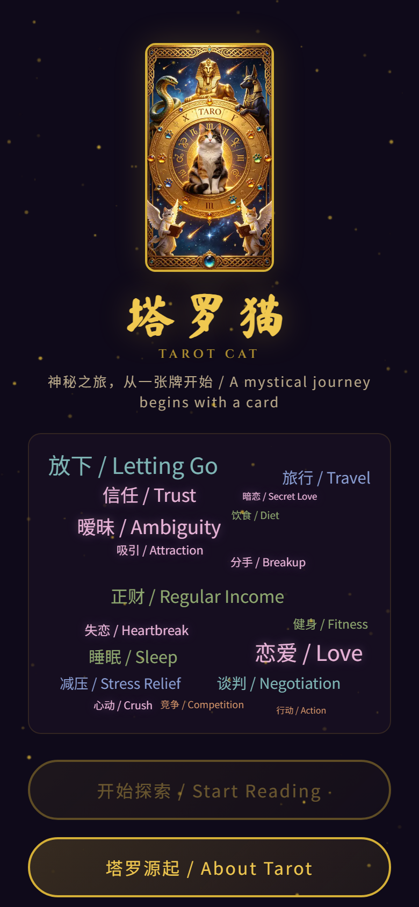
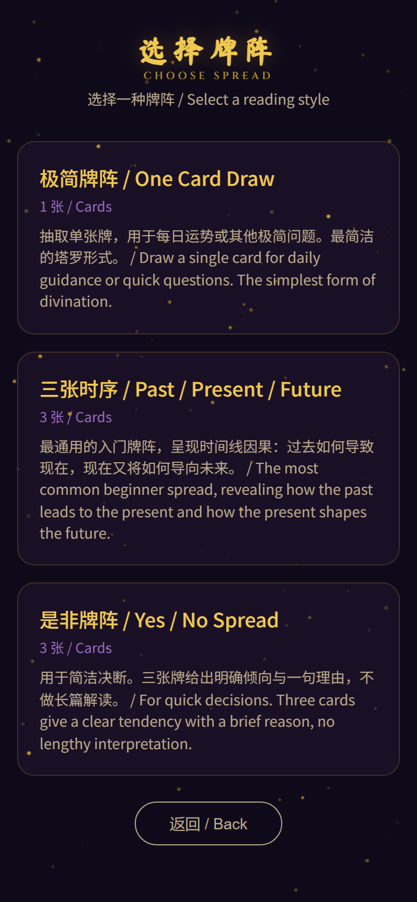
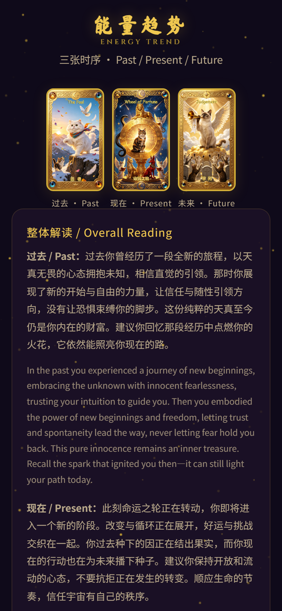
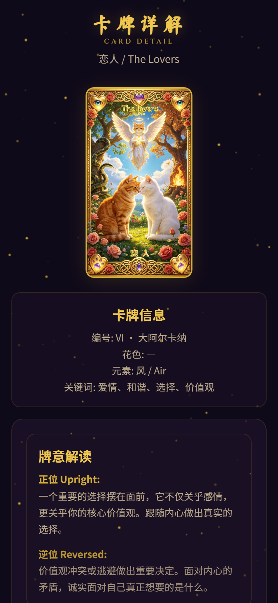

创意名称：猫咪塔罗牌 / Tarot Cat


传统塔罗牌产品普遍存在一个根深蒂固的问题——它们在不断强化一种宿命论叙事。翻开一张"逆位高塔"，用户看到的是"灾难降临""关系破裂""事业崩塌"这样的字眼；翻开"逆位塔"，被告知"精神上的迷失与迷茫"。这些解读往往让本就处于迷茫、焦虑状态的用户更加不安。塔罗变成了一种制造焦虑的工具，而非化解焦虑的工具。我们认为这是一个值得被纠正的偏差。
与此同时，当代年轻人对心理自助工具的需求正在急剧增长。从冥想应用到人格测试，从手账系统到习惯追踪器，"自我关怀"已经成为一种文化潮流。然而，市面上绝大多数塔罗应用仍然停留在传统的、充满负面暗示的解读框架中，与当代年轻人追求正向心理支持的诉求之间形成了巨大的落差。猫咪塔罗牌正是要填补这个空白。
这个项目的灵感来源于一个简单的观察："躺平的人从来不塔罗"。人们往往在面临选择、遇到困难、或者想要在行动之前获得一些心理上的确认与方向感时，才会去翻塔罗牌。这意味着，寻求塔罗本身就是一种积极行为的信号——用户在主动寻找方向，在尝试与自己的内心对话。
然而，传统的塔罗解读框架并没有珍惜这份"主动性"。它用逆位的厄运叙事打击用户刚刚萌芽的行动意愿，用模糊而负面的措辞加剧用户的不安全感。我们认为，这个来自15世纪的象征性纸牌游戏，完全可以在当代积极心理学的框架下被重新解读，成为一款真正帮助用户建立自我觉察、发现自身优势的正向工具。
此外，我们注意到塔罗牌的视觉元素——尤其是猫咪主题的塔罗插画——天然具有治愈感和亲和力。猫咪的松弛、独立、好奇，本身就是一种值得传递的生活态度。将猫咪元素与积极心理学的理念结合，让整个体验从视觉到文字都传递出温暖、安全和建设性的信息。
猫咪塔罗牌是一个纯前端 HTML 应用，无需后端服务，无需用户注册，打开即用。用户首先输入一个反映自己当下心理状态的关键词（如"迷茫""疲惫""期待"），然后选择牌阵（单牌、三牌或时间之流），再通过"洗牌——翻牌"的交互完成一次微型自我对话。整个流程不超过3分钟。
每张卡牌的解读分为正位与逆位两个版本，但与传统塔罗不同，我们的逆位解读并非"厄运的警告"，而是"需要觉察的内在阻力，是成长的信号"。四句关键解读句从正向到负向排列，让用户先看到自己的优势与资源，再温和地提示需要关注的挑战。牌阵结束后，系统还会提供一份基于四元素（火、水、风、土）的能量分析，帮助用户直观地看到自己在行动力、情感、思想、物质联系四个维度的能量分布。
产品完全中英双语，所有解读文案均提供中文与英文两个版本，让工具本身的语言也是包容的、开放的。


痛点一：传统塔罗的负面叙事制造焦虑。当前主流塔罗应用对逆位牌的解读充满了"灾难化"的措辞——"失败""破裂""欺骗""丧失"。用户本是在寻求方向和安慰，却被引导进入更深的恐惧和无力感中。这种体验与"自我关怀"的诉求完全背道而驰。很多用户反馈："每次看完塔罗反而更焦虑了。"
痛点二：塔罗被等同于"算命"，失去了自我探索工具的本质价值。大众对塔罗的认知被几个世纪的神秘主义渲染所裹挟，认为塔罗就是"预测未来"的工具。这导致两个问题：理性用户对塔罗产生偏见和排斥；而相信"命运预测"的用户则容易陷入被动等待或恐慌心理中。事实上，塔罗的起源是15世纪意大利宫廷的象征性纸牌游戏，它关注的是"能量变化与相互联系"，而非预判不可更改的命运。
痛点三：现有塔罗应用缺乏科学的心理学框架支撑。大多数塔罗应用的解读文案是拼凑的、碎片化的，缺乏系统性的心理学理论作为底层架构。用户在使用后往往觉得"好像说了什么，又好像什么都没说"，无法将塔罗的象征意义转化为真正可执行的行动指引。猫咪塔罗牌则以积极心理学为核心理论框架，确保每一句解读都有心理学依据和建设性导向。
痛点四：心理自助门槛高，专业心理咨询昂贵且不易获取。并不是每个人都需要或能够接受正式的心理咨询。很多用户需要的是一种低门槛、低成本、可以在私密空间中独立完成的心理自助工具。猫咪塔罗牌恰好满足这个需求——它是一种轻量级的自我对话工具，不需要任何专业知识，也不需要付费注册，3分钟即可完成一次正向自我探索。
这是一句看似戏谑、实则深刻的话。仔细观察你会发现，选择翻开塔罗牌的人，几乎都是在某种行动的边缘：正在考虑换工作的人、正在犹豫要不要表白的人、正在为未来方向焦虑的人、正在试图理解一段复杂关系的人。这些人有一个共同的特征——他们在乎。他们在乎自己的未来，在乎自己的选择，在乎自己的内心状态。恰恰是这份"在乎"，驱使他们主动寻求一个可以与自我对话的工具。
这意味着，寻求塔罗本身就是一种积极行为的信号。它说明用户没有放弃对自己的关注，没有放弃对方向的寻找。塔罗天然是行动者的自我对话工具，而非宿命论者的逃避出口。一个真正"躺平"的人，根本不会去翻牌——因为翻牌这个动作本身就意味着你还在试图理解、试图改变、试图前进。
猫咪塔罗牌深刻地理解并尊重这份主动性。我们的每一句解读都不是在告诉用户"你会怎样"——好像命运是一台已经设定好的机器——而是在告诉用户"你可以怎样"。我们关注的不是预测未来，而是帮助用户看清当下，发现自己在面对这个当下的处境时所拥有的资源、优势和可行的行动方向。我们相信，当一个人看清了自己的优势和选择，他自然就知道该往哪里走。
塔罗牌的四元素体系——火（权杖，代表行动力与创造力）、水（圣杯，代表情感与人际关系）、风（宝剑，代表思想与决策）、土（星币，代表物质基础与现实联系）——恰好构成了一个完整的生活能量模型。这四个维度并非抽象的玄学概念，而是与积极心理学中关注的四个核心生活领域高度对应：行动与投入、情感与关系、认知与意义、资源与稳定。
在一次三牌阵或时间之流牌阵结束后，猫咪塔罗牌会统计用户翻到的牌中各元素的出现频率，生成一份直观的能量分析。例如，如果用户翻到的三张牌中出现了两张火元素和一张水元素，分析会告诉用户："当前你的行动能量充沛，内心有强烈的驱动力想要推进某些事情；同时，你的情感层面也在活跃运作，说明这件事与你的人际关系或内在感受密切相关。建议在行动的同时也关注自己的情感需求，确保行动与内心感受的方向一致。"
这种分析的核心不是告诉你"你有什么问题"，而是"你在哪些方面能量充足，可以大胆行动；在哪些方面可能需要注意补充或调整"。它将传统的、充满焦虑感的"塔罗诊断"转化为一种积极正向的"能量地图"，帮助用户以一种客观而温和的视角审视自己当前的状态。这种框架与积极心理学中强调的"优势视角"完全一致——先看到资源，再看到挑战。
传统塔罗体系中最大的"有毒遗产"莫过于"逆位 = 厄运"这一等式。当用户翻到一张逆位的牌，大多数塔罗应用会给出这样的解读：事业受阻、感情破裂、健康堪忧、财运下滑……这些措辞不仅缺乏心理学依据，而且在客观上对用户造成了不必要的心理压力。一个本就在寻求方向和安慰的人，反而被推向了更深的焦虑。
猫咪塔罗牌从根本上重构了逆位的解读逻辑。在我们的框架中，逆位不等于厄运，逆位代表"需要觉察的内在阻力"，它是成长的信号而非诅咒。逆位牌的出现，意味着在对应的领域里，存在某种内在的张力或未被看见的模式，需要用户给予温柔的注意力。这不是一个负面判定，而是一个温暖的邀请——邀请你更深入地了解自己。
以"恋人牌"为例。传统逆位解读往往是"感情危机""错误的选择""价值观冲突"。而猫咪塔罗牌的逆位恋人牌解读是："这是一个审视关系的时刻。逆位的恋人牌并不是告诉你'你的关系要完了'，而是邀请你思考：你是否在一段关系中忽略了自己的需要？你是否正在某个选择面前感到内心有两种声音在拉扯？学会区分什么时候该坚持、什么时候该放手，本身就是一种深刻的成长。你在思考这个问题，说明你对自己和对方都怀有真诚的在意。"
此外，我们的每张牌解读都包含四句关键句，按照从正向到负向的顺序排列——用户首先看到的是优势、资源和支持性信息，然后才是温和的挑战提示。这种信息架构的设计理念来自积极心理学中的" broaden-and-build "理论：正向情绪能够扩展人的思维和行动范围，从而构建长期的心理资源。先建立安全感，再探讨挑战性议题——这是对用户心理节奏的尊重。
塔罗牌的起源远比大众想象的要世俗和理性。历史研究表明，塔罗最早出现在15世纪的意大利，最初只是一种象征性的纸牌游戏，用于宫廷娱乐和社交。最早的塔罗牌——如著名的"维斯康提-斯福扎"牌——更接近于艺术品，其画面描绘的是文艺复兴时期的社会生活、美德寓言和哲学理念，而非神秘的命运预言。
正是瑞士心理学家卡尔·荣格（Carl Jung）赋予了塔罗在心理学框架下的合法性。荣格认为，塔罗牌面是人类集体潜意识原型的视觉化表达——愚者代表"天真者"原型，皇帝代表"父亲"原型，星星代表"希望"原型。从这个角度看，塔罗不是在预测未来，而是在帮助用户与自身的原型进行对话，从而获得更深层次的自我理解。
塔罗关注的本质是"能量变化与相互联系"——不同原型之间的互动、不同生活领域之间的张力与和谐。这恰好与积极心理学关注的核心议题——"优势、韧性、意义感"——高度契合。积极心理学之父马丁·塞利格曼（Martin Seligman）提出的 PERMA 模型（积极情绪、投入、关系、意义、成就）与塔罗四元素体系之间存在令人惊叹的对应关系。
猫咪塔罗牌所做的，是剥离几个世纪积累在塔罗之上的宿命论外衣，让它回归作为自我探索工具的本质。我们不预测未来，不判断吉凶，不制造焦虑。我们用猫咪的温暖和积极心理学的严谨，为用户提供一个安全、信任、充满建设性的自我对话空间。
在当代快节奏的生活中，真正有效的心理自助工具必须是低门槛、短时间、高密度的。猫咪塔罗牌的完整使用流程——输入关键词、选择牌阵、洗牌、翻牌、阅读解读——不超过3分钟。这3分钟不是在消耗用户的时间，而是在为用户创造一个与自我重新连接的微型仪式。
流程的设计本身也有心理学考量。关键词输入是一个"锚定"步骤——用户需要用一两个词来概括自己当下的状态，这本身就是一种正念练习，要求用户暂停、觉察、命名自己的感受。洗牌的动画提供了心理上的"过渡空间"——从日常的焦虑节奏进入一个更平静、更专注的内心状态。翻牌的时刻是"揭示"——不是揭示命运，而是揭示一种看待自身处境的新视角。阅读解读是"整合"——将象征意义与自己的生活经验连接起来。
整个流程中，解读文案的语言始终保持"你可以怎样"的建设性姿态，而非"你会怎样"的宿命论断言。每段解读的结尾，都附有明确的免责声明："塔罗牌是一种象征性的自我探索工具，并非科学预测。如面临严重心理困扰，请寻求专业心理咨询师的帮助。"这种坦诚不仅保护了用户，也体现了我们对心理学伦理的尊重。
产品完全采用中英双语呈现。这不仅是国际化设计的需要，更是一种理念的表达——让工具本身的语言也是包容的、开放的。无论用户来自哪种语言背景，都能在这个工具中获得同等品质的自我探索体验。语言的多样性传递了一种价值观：自我关怀没有国界，积极心理学的力量属于每一个人。
本参赛作品的创意产物为一个自包含的 HTML 文件——猫咪塔罗牌 / Tarot Cat。该文件包含完整的前端应用逻辑、78张塔罗牌的中英双语解读数据库、四元素能量分析引擎、牌阵交互系统以及响应式 UI 设计。
HTML 文件无需任何后端服务、数据库或第三方依赖，可直接在浏览器中运行。用户只需打开文件，即可体验完整的塔罗自我探索流程：从关键词输入到牌阵选择，从翻牌交互到能量分析，从卡牌详情到总结建议。
产物特点：
* 创意产物 HTML 文件请参见参赛提交附件